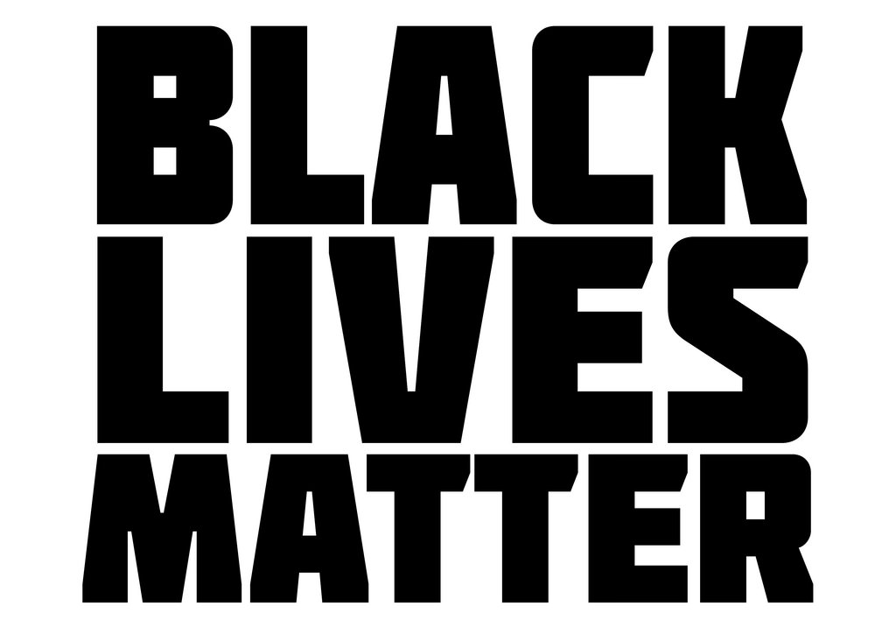
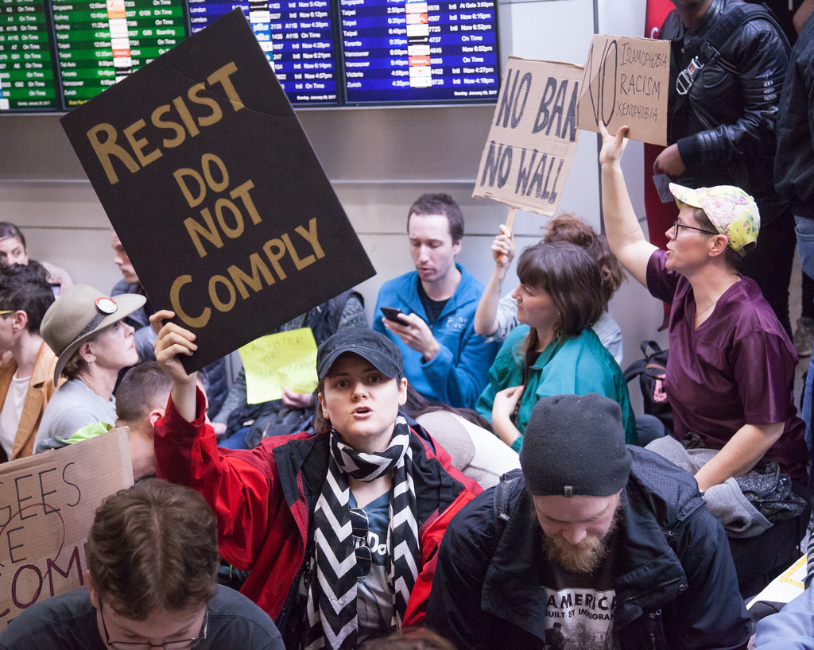
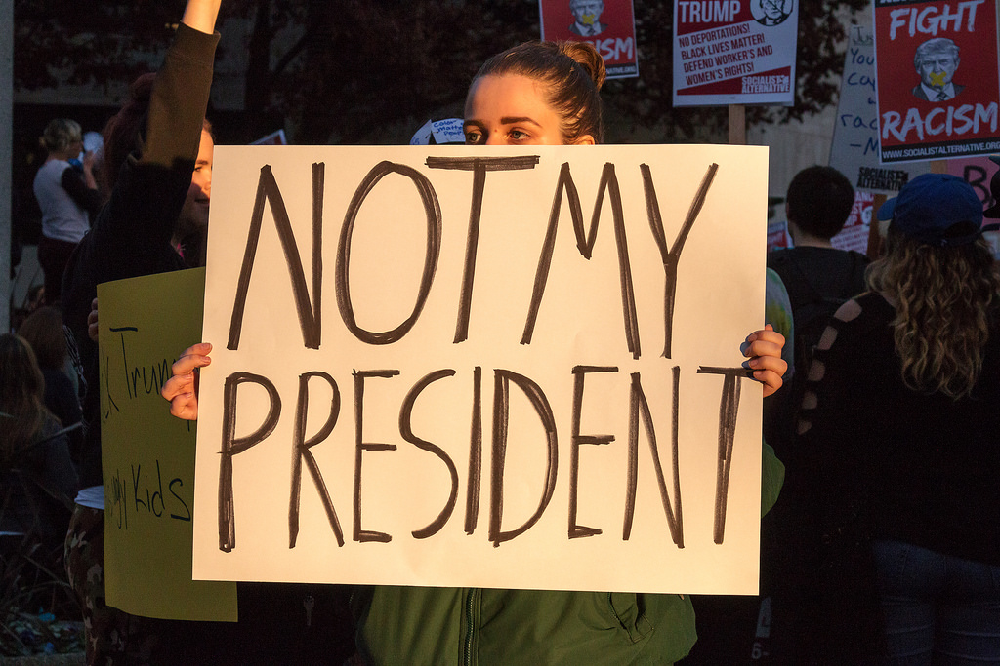

the #movements
|  |  |
|
| #blacklivesmatter | #womensmarch | #nodapl |
|  |  |
 |
| #nobannowall | #deleteuber | #notmypresident |
"Injustice anywhere is a threat to justice everywhere."
- Martin Luther King Jr.
The mission of this website is to highlight and provide education about the protest movements that were born in reaction to the election of Donald Trump. At times it can feel like these causes are splintered, separate or maybe even at odds. But in truth, they are all important weapons in the fight against the tyranny of the Trump administration. The aim of the site is to arm you with more information and empower you to join the fight for justice in America and around the world.